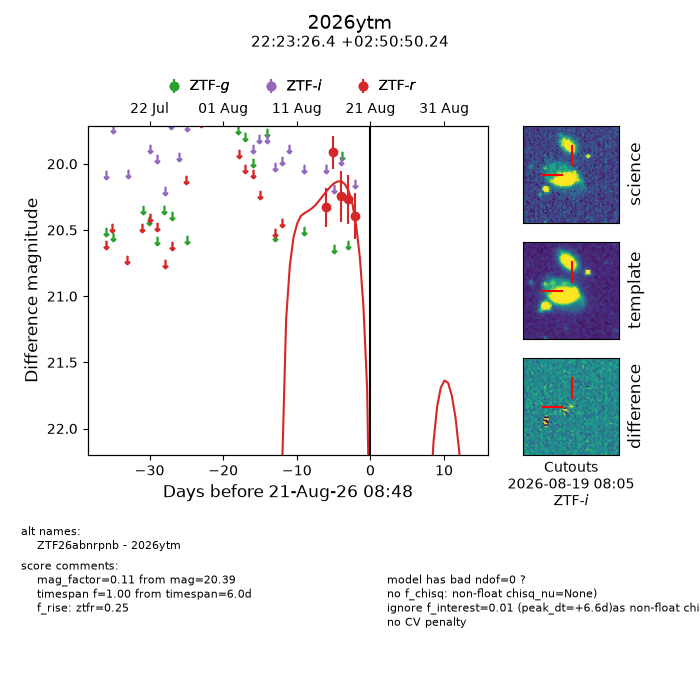
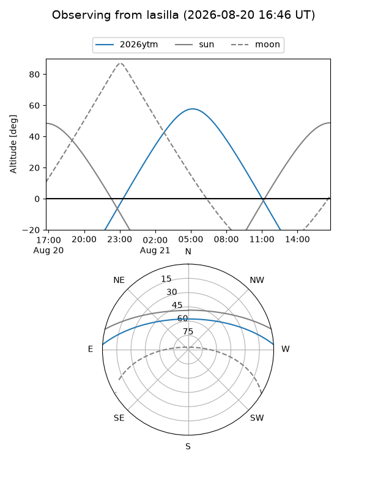
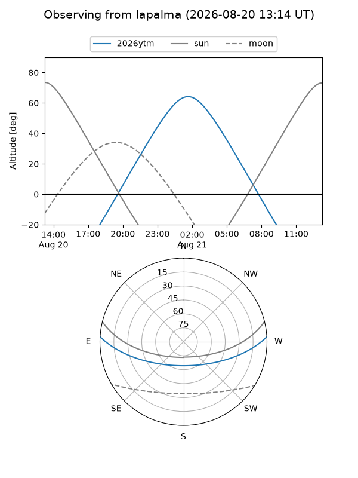
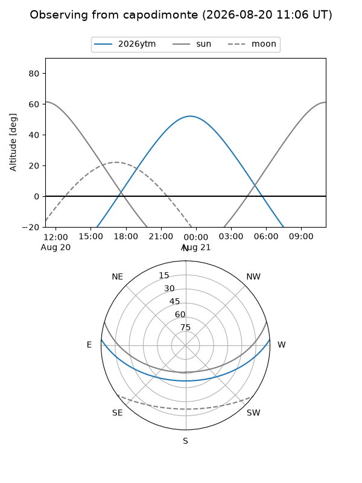
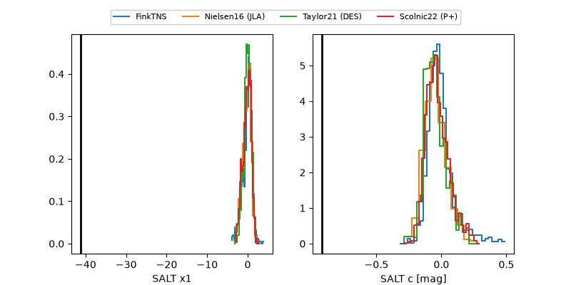

2026ytm
Target 2026ytm at 2026-08-21 08:51
Aliases and brokers:
FINK-ZTF: ztf.fink-portal.org/ZTF26abnrpnb
Lasair-ZTF: lasair-ztf.lsst.ac.uk/objects/ZTF26abnrpnb
ALeRCE-ZTF: alerce.online/object/ZTF26abnrpnb
YSE-PZ: ziggy.ucolick.org/yse/transient_detail/2026ytm
TNS name: wis-tns.org/object/2026ytm
Direct TNS query: direct search
alt names
ZTF26abnrpnb (ztf,fink_ztf)
2026ytm (tns,yse)
Coordinates:
equatorial (ra, dec) = 335.8598,+2.84729
equatorial (HMS+DMS) = 22:23:26.36,+02:50:50.24
galactic (l, b) = (67.0955,-43.41292)
Flags:
TNS type: nan
peak dt: +6.6
Photometry:
last ztfr=20.39
5 ztfr detections
Lightcurve

Visibility



Additional plots
